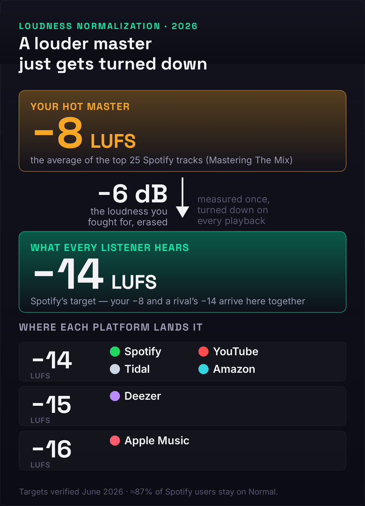
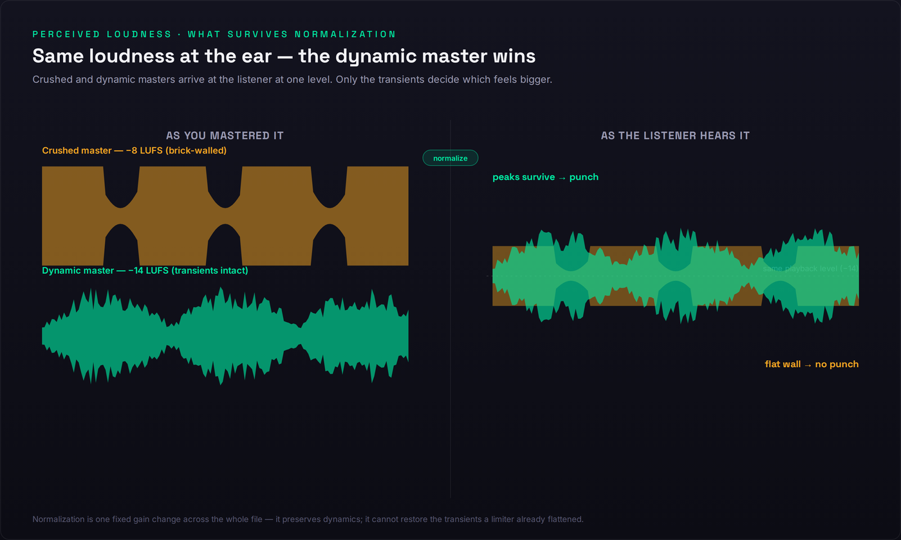
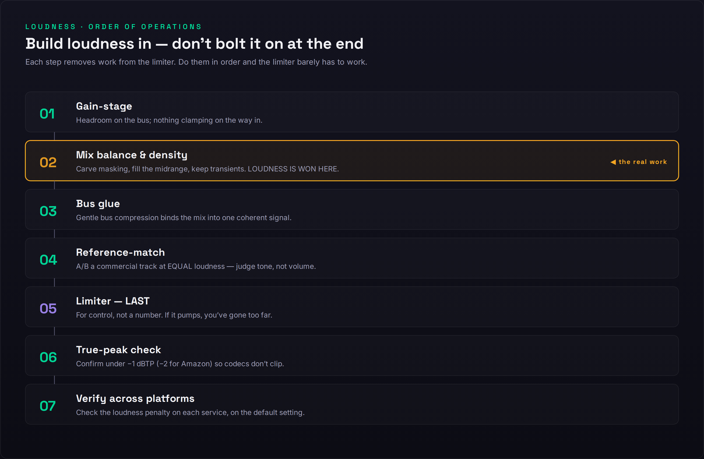

You finish the mix, bounce it, and drop it next to a commercial track you love. Theirs hits like a wall; yours sounds like it’s apologizing from the next room. So you do the obvious thing — reach for the limiter, push the master fader, slam another few dB out of it — and somehow it still doesn’t feel as big, it just feels worse: flatter, harsher, more tired. If that loop sounds familiar, the problem isn’t that you haven’t pushed hard enough. It’s that you’re fighting a war that ended years ago, with weapons the platform quietly disarms before anyone hears the result.
Here’s the idea that reorganizes everything below, and the thing almost no one tells you plainly: the loudness war didn’t end — it moved inside your song. For two decades, “loud” meant winning a contest between records — being a hair hotter than the track before you on the radio or the CD changer. Streaming normalization deleted that contest. Every major platform now measures your track and turns it to a fixed playback level, so being louder than your neighbor buys you nothing; the platform simply turns you back down. The battlefield didn’t disappear — it relocated. The only loudness that still matters is the contrast you build within the track: transient against body, density against space, energy where the ear is most sensitive. This page is a diagnostic for that new reality. We’ll measure the real problem, separate the four different things people mean by “not loud,” and fix each one at the stage where it actually lives — which, almost always, is not the limiter.
Your mix probably isn’t “not loud” — it’s not dense or not balanced, and loudness normalization is exposing it. Every major streaming service plays your track at a fixed level (around −14 LUFS, Apple Music nearer −16), so a hotter master just gets turned down to the same place as everyone else. At that matched level, the more dynamic, better-balanced mix sounds bigger — its transients survived. The fix is to build loudness into the mix with gain staging, density, and midrange balance, set a −1 dBTP ceiling, and use the limiter for control, not for volume. First, loudness-match before you judge anything — half of all “my mix is quiet” problems vanish the moment you compare at equal level.
The 60-Second Diagnosis: Measure, Then Loudness-Match
Before you change a single setting, you need two numbers and one honest comparison, because “not loud” is a feeling and feelings lie about volume more than almost anything else in audio. The two numbers are your integrated LUFS (how loud the whole track is, the way a streaming service measures it) and your true peak in dBTP (how close your loudest sample-reconstructed peak comes to clipping). Put a free loudness meter on your master, play the loudest section — usually the final chorus — and read both. If you don’t have a meter you trust, our mix fingerprint analyzer gives you a fast read on where your track sits, and a deeper primer on the unit itself lives in what LUFS actually means. Write the numbers down. You can’t fix loudness you haven’t measured, and you definitely can’t fix it by feel.
Now the comparison that settles most cases before you touch anything: loudness-match against a reference. Import a commercial track in your genre, then turn one of the two down until they measure the same integrated loudness — not until they sound the same, until the meter agrees. Then A/B. This is the single most important move on the page, because the ear has no absolute loudness memory and the louder of two files almost always sounds “better” for no reason other than being louder. Strip that illusion away and one of two things happens. Either your mix now holds up fine — in which case you never had a loudness problem, you had a level-matching problem, and you can stop here — or, at equal loudness, your mix sounds smaller, thinner, or more congested, and that gap is the real target. Everything below is about closing it.
To make the comparison concrete, check what each platform will actually do to your file. A loudness penalty checker shows how many dB Spotify, YouTube, Tidal, and the rest will add or subtract from your master, and a LUFS target reference lays out the current numbers side by side. The revelation for most people is that the “penalty” on a hot master isn’t a punishment for being too quiet — it’s a turn-down for being too loud, erasing exactly the loudness you stayed up all night chasing. Once you can see that on a meter, the rest of this article stops sounding like opinion and starts sounding like arithmetic.
“Not Loud” Is Four Different Complaints
The reason loudness advice on the internet contradicts itself is that “my mix isn’t loud” is four unrelated problems wearing one sentence, and only one of them is a limiter issue. Diagnose which one you have before you spend a single move, because the fixes point in different directions and the wrong one makes things worse. The diagram below maps the first thing you have to understand — what the platforms actually do to your level — and the four complaints follow directly from it.

Complaint one: it’s quiet on my DAW meter. This is usually a non-problem. On Spotify’s default setting and on Apple Music, a quiet master is turned up toward the target, so a low meter reading at home tells you nothing about how loud you’ll sound in the world. If the only evidence is the number in your DAW, loudness-match against a reference and the worry typically evaporates. Complaint two: it sounds thin or small after I upload it. This is the real and common one — a mix-stage problem of density and balance that normalization exposes by stripping away the level difference you were hiding behind. Complaint three: it’s quieter than other tracks on a platform that won’t turn anything up. YouTube, Amazon Music, and Tidal turn loud tracks down but never boost quiet ones, so a genuinely soft master sits below its neighbors there — again a mix-density issue, not a limiter ceiling. Complaint four: it distorts when I push it loud. This is the only true mastering-chain problem, and it’s about true peak and over-limiting, not about needing more level.
Notice that three of the four complaints are solved in the mix, and the fourth is solved by limiting less. That is the whole article in miniature. The platforms have converged on a narrow band of targets — most sit at −14 LUFS, Apple Music nearer −16, Deezer around −15 — and crucially, two of them are asymmetric: Spotify (on Normal) and Apple Music will raise a quiet track and lower a loud one, while YouTube, Tidal, and Amazon only ever lower. The single most useful fact about the modern landscape is buried in that asymmetry: about 87% of Spotify listeners never leave the Normal setting, according to analysis cited by iZotope, which means the default behavior — turn loud down, turn quiet up, land everyone near the same level — is what the overwhelming majority of your audience actually hears. You are not mixing for the meter in your room. You are mixing for that target.
Why a Louder Master Just Gets Turned Down
Picture two masters of the same song. One is slammed to −8 LUFS integrated — brick-walled, dense, every peak shaved flat. The other is left at −14 LUFS with its transients intact and a foot of dynamic headroom. On your DAW meter, the first one looks and feels enormous and the second looks timid. Now upload both to Spotify on its default setting. The platform measures each, decides the first is 6 dB too hot, and turns it down by 6 dB. The second is already at target, so it’s left alone. At the listener’s ear, both tracks now play at the same loudness — and the crushed one has nothing left to show for the fight. It spent its entire dynamic range buying a loudness the platform confiscated at the door.

This is where perceived loudness and measured loudness split apart, and the split is the heart of the matter. Loudness normalization is a single, fixed gain change applied across the whole file — a volume knob, not a compressor — so it preserves your dynamics exactly as you delivered them. What it does not do is give back the transients a limiter already flattened. The crushed master arrives at −14 as a dense, peakless slab; the dynamic master arrives at the same −14 with its kick still punching above the body of the track. The ear reads that contrast — the gap between transient and sustain, what engineers call dynamic range or crest factor — as energy. Two files, identical measured loudness, and the dynamic one sounds bigger every time. The platform didn’t just neutralize the loud master’s advantage; it inverted it.
You can see this in the data. Analysis by Mastering The Mix of the top 25 tracks on Spotify found they average around −8.4 LUFS integrated, with choruses pushing past −6 short-term — numbers that look like the loudness war never ended. But those tracks aren’t loud at your ear; they’re loud in the file, and they all get turned down by the same 6-ish dB on the way to a Normal-setting listener. What separates them from your mix isn’t that they’re hotter — after normalization they aren’t — it’s that they engineered density and midrange energy that survives the turn-down. They win on internal contrast, not on level. This is also why mastering for streaming is a genuinely different craft now than mastering for CD ever was: you’re no longer maximizing a number, you’re maximizing how much impact survives a gain change you don’t control.
And it’s why −14 LUFS is not a mastering target. Repeat that, because half the bad advice online gets it backwards: −14 is the neutral point where Spotify’s normalization does nothing — it neither raises nor lowers you — not a level you should master toward. No professional masters to −14. They master so the song sounds as good as it possibly can at as high a level as it can take without losing impact, then let the integrated number land wherever it lands — often hotter than −14 — knowing the platform will normalize it anyway. Mastering to hit −14 exactly is like driving to hit a speed limit precisely: you’ve confused the ceiling with the goal. The goal is impact at the playback level your listener will actually hear.
This is the deeper meaning of the loudness war moving inside your song. The old war was a war of levels — a single number you could win by turning everything up. The new contest is a war of relationships: kick against snare, transient against sustain, the body of the track against the spaces between the hits. Those relationships are invisible to a loudness meter, which reads only the average, yet they’re the entire reason one −14 LUFS master sounds like a record and another sounds like a demo. Normalization didn’t flatten music’s loudness so much as it changed what loudness is — from a property of the whole file to a property of the contrast within it. Master with that in mind and you stop competing on a number you can’t win and start competing on the one thing the platform can’t take away from you.
What’s Actually Stealing Your Loudness
If loudness-matching showed a real gap — your mix smaller at equal level — the cause is upstream of the limiter, in the mix. Here are the eight usual culprits, each with the move that actually fixes it. Work them in roughly this order, because the early ones make the later ones easier and the limiter only ever has to clean up what’s left.
1. A brick-wall limiter killing your transients. The most self-inflicted wound: pushing the limiter so hard it flattens the very peaks that read as punch. Past a point, more limiting doesn’t add loudness — normalization removes it anyway — it just trades impact for fatigue. Pull the limiter back until you can hear the transients breathe again; if you can hear the limiter working, you’ve gone too far. Our guide to using a limiter properly covers ceiling, release, and how much is too much.
2. No headroom and sloppy gain staging. If your individual tracks and buses are clipping internally or running into the master with no room to move, every downstream processor is working in a vice and your loudness ceiling is set by the worst-behaved channel. Build headroom back into the chain and fix your gain staging so nothing clamps before the master; a headroom calculator helps you set sane levels. This single step removes more “why won’t it get loud” problems than any plugin.
3. A weak, hollow midrange. The ear is most sensitive between roughly 1 and 4 kHz, so loudness perception lives in the midrange far more than in the lows. A mix scooped of mids can measure the same LUFS as a full one and sound dramatically smaller, because the part of the spectrum your ear weights most is empty. Filling the midrange with intent — rather than chasing a hollow “smiley-face” curve — is one of the fastest perceived-loudness gains available, and it’s central to making a mix that translates on every system, from earbuds to a car.
4. Untamed dynamics fighting the limiter. If your loudest moments tower over everything else, the limiter has to clamp hard on the peaks just to reach a sane average, and the whole mix pays for a few rogue transients. Control dynamics earlier — with level rides, gentle channel compression, and bus compression to glue the mix — so the limiter inherits an already-even signal and barely has to act.
5. Frequency masking eating your clarity. When instruments pile into the same band, they don’t add up to “louder,” they add up to “congested,” and congestion reads as small. Low-mid buildup is the usual offender — the same problem behind a muddy mix — and clearing it with subtractive EQ lets each element occupy its own space and the whole mix read as bigger at the same level. Loudness is partly just clarity you can finally hear.
6. Phase and mono problems hollowing the center. If your low end is wide and phasey, it partially cancels when summed — and a lot of playback (club systems, phone speakers, Bluetooth) is mono or near-mono. Energy that cancels is loudness you generated and threw away. Check the mix in mono, keep the lows centered, and fix phase relationships between mic’d sources so the bottom end stays solid wherever it’s played.
7. A sparse arrangement with nothing to be loud. Sometimes “not loud” is an arrangement problem in disguise: a track with three elements and a lot of empty space has little sustained energy to push, so it measures quiet no matter how you process it. Density of parts — sustained pads, doubled rhythm elements, supporting layers — gives the loudness something to hold onto. You can’t limit your way to fullness that was never arranged.
8. Over-compression that’s already spent the dynamics. The mirror image of an untamed mix: if you’ve squashed everything individually before it reaches the bus, the mix arrives flat, lifeless, and with no transients left for the limiter to preserve. There’s nothing for normalization to reward. Back the channel compression off, let some life back into the parts, and save the gentle glue for the bus.
The Loudness That Survives Normalization
So if you can’t win by being louder, how do you win? You engineer the qualities that still read as “big” after the platform has turned everyone to the same level. There are three, and they’re the real craft of modern loudness. The first is crest factor — the distance between your peaks and your average level, sometimes expressed as PLR (peak-to-loudness ratio). A healthy crest factor means your transients still poke out above the body of the track, and since normalization preserves that relationship, it’s the punch that survives the turn-down intact. Crushing the crest factor to chase a hotter integrated number is the exact trade you don’t want: you’re spending the one thing the platform lets through to buy the one thing it takes away.
The second is density without limiting — making the mix feel full and rich before the limiter ever sees it, so the limiter has almost nothing to do. Saturation is the workhorse here: harmonic distortion adds perceived loudness and warmth by generating new upper harmonics the ear reads as energy, and it does it without touching your peak level, which is exactly the opposite of what a limiter does. Parallel compression is the other half — blending a heavily compressed copy under the dry signal raises the quiet detail and sustains the body while leaving the transients of the dry track untouched. Between them, saturation and parallel compression let you build density into the file rather than clamping it on at the end, and density built in survives normalization in a way density clamped on never does.
The third is midrange balance, and it’s the most underused loudness tool there is. Because of the ear’s frequency response — the equal-loudness contours that make us most sensitive in the upper mids — a track with a confident, present midrange simply sounds louder than a scooped one at the same LUFS. This is why a well-balanced mix can measure quieter than a slammed one and still feel bigger: it’s loud where the ear is paying attention. Get the midrange right and you get loudness for free, at no cost to your peaks or your dynamics. The discipline that ties all three together: when you A/B against a reference, match loudness first and judge tone and impact, never volume. The goal was never a number. It was a sound that feels big at a level you don’t control — and if you want the structure of a full chain, our walkthrough of mastering a song at home puts these moves in sequence.
The −1 dBTP Ceiling and Why Hotter Distorts
Now the one genuine mastering-chain problem — complaint four, the mix that distorts when pushed. The fix here isn’t more loudness, it’s a ceiling: set your limiter’s true-peak ceiling to −1 dBTP for most situations, and −2 dBTP if you’re sending to Amazon Music or your master is especially hot. The reason is inter-sample peaks. Your DAW shows sample peaks, but when a file is converted to a lossy codec like Ogg Vorbis or AAC — which is exactly what streaming platforms do — the reconstructed analog waveform can overshoot the digital samples and rise above 0 dBFS, clipping in the conversion even though your meter swore you were under. The dBTP headroom is the safety margin that keeps those reconstructed peaks from clipping after the platform re-encodes your file.
Pushing your ceiling to 0 dBFS to squeeze out the last fraction of a decibel is therefore a trap on two counts. First, normalization is going to turn a hot master down anyway, so that last fraction of loudness is erased before anyone hears it — you took on distortion risk for a gain the platform deletes. Second, the inter-sample clipping you invited is audible and ugly in exactly the lossy formats your listeners actually use, so you’ve degraded the file for the audience while gaining nothing. Amazon Music is the outlier that explicitly asks for −2 because its playback chain is more prone to this, but the principle is universal: leave the ceiling at −1 dBTP, let normalization handle the level, and you trade a meaningless scrap of loudness for a clean, codec-safe master. Check the true-peak number on a meter before you bounce; it’s the cheapest insurance in mastering.
The Order of Operations
Loudness is built, not bolted on, and the order you build it in decides how much the limiter has to do — which decides how much damage it does. The sequence below removes work from the limiter at every step, so by the time the signal reaches it there’s almost nothing left to clamp. Do these out of order and you’ll find yourself asking a limiter to fix problems that belong three stages earlier, which is precisely how mixes get crushed.

Start with gain staging so nothing clips on the way in and every processor has room to work. Then do the real work: mix balance and density — carve the masking, fill the midrange, control the dynamics, add density with saturation and parallel compression. This is where loudness is actually won, and if you do it well, everything after it is a formality. Next, bus glue — gentle bus compression to bind the mix into one coherent, breathing signal rather than a stack of separate parts. Then reference-match at equal loudness to judge tone, not volume, and confirm you’re competitive on impact. Only then the limiter, last, for control and a sane ceiling — not to manufacture loudness, just to catch the final peaks. Then the true-peak check at −1 dBTP, and finally verify across platforms so you know what each service will do to your file. If you want this as a literal signal chain you can dial in, our mastering signal chain tool lays the order out plugin by plugin, and the best limiter plugins guide covers the tool that sits at the end of it.
Diagnose Your Own Mix
Put it together as a checklist you can run on the track that’s bothering you. First, measure: read your integrated LUFS and true peak with the mix fingerprint analyzer, and check what each service will do to that master with the loudness penalty checker. Second, loudness-match against a commercial reference and decide honestly whether the gap is real — if your track holds up at equal level, you’re done. Third, if the gap is real, locate the stage: is it a thin midrange and weak density (the mix), a crushed crest factor and over-limiting (the master), or true-peak distortion (the ceiling)? Fourth, fix at that stage, not at the limiter, using the order of operations above and a headroom calculator to keep your gain staging honest. If you’d rather hand the final stage to a tool, our roundup of the best AI mastering services in 2026 covers the ones that hit a competitive level without crushing the dynamics — useful as a reference target even if you ultimately master by hand.
The reframe that makes all of this click: stop asking “how do I make it louder” and start asking “how do I make it feel big at a fixed playback level.” The first question leads you to the limiter and a crushed, fatiguing master that the platform turns down anyway. The second leads you to the mix — to density, balance, and dynamics — and to a master that sounds bigger precisely because it isn’t fighting a war that’s already over. The loudness war moved inside your song. Win it there, and the meter takes care of itself.
Train Your Loudness Ear: 3 Drills
Run these in order. Each one builds the judgment that lets you fix loudness by understanding instead of by reflexively reaching for the limiter.
- Import a commercial track in your genre next to your mix and put a loudness meter on each.
- Turn one track down until both read the same integrated LUFS — match the meter, not your ear.
- A/B them and write down what you hear at equal loudness: is yours thinner, smaller, more congested, or actually fine? That answer is your real diagnosis.
- On your master, read both the integrated LUFS and the true-peak level on the loudest chorus.
- Subtract integrated LUFS from peak to get a rough peak-to-loudness ratio — the distance your transients travel above the body.
- Now push your limiter 3 dB harder and read it again. Watch the ratio shrink, listen to the punch flatten, and feel why crushing the crest factor is the trade you don’t want.
- Take a mix that won’t get loud and, before the limiter, add gentle saturation and a parallel-compression bus to build density into the file.
- Set your limiter ceiling to −1 dBTP and bring it down only until it’s catching the loudest peaks — no further.
- Loudness-match this version against your old crushed bounce. At equal level the density-first master should sound bigger with the transients intact — that’s the loudness that survives normalization.
Frequently Asked Questions
No. −14 LUFS isn’t a mastering target — it’s the level at which Spotify’s normalization does nothing, the neutral point where it neither raises nor lowers your track. No professional masters to −14; they master so the song sounds as good as it can at as high a level as it can take without losing impact, and let it land where it lands. Most chart tracks sit hotter than −14 and simply get turned down on playback.
Two possibilities, and they have different fixes. Either your mix is genuinely quieter at matched loudness — a density and balance problem in the mix — or you’re comparing your track to a commercial reference at different levels and the louder file is just fooling your ear. Loudness-match the two before you judge. On Spotify’s default setting a quiet master is turned up to the target anyway, so a low meter reading isn’t the problem there; a thin-sounding mix is.
Not after normalization. Both masters are pulled to the same playback level, so they arrive at the listener at the same loudness. At that point the more dynamic master sounds bigger, because its transients survived, while the crushed one sounds smaller for having spent its dynamic range. Louder-on-the-meter and louder-at-the-ear are two different things, and the platform only lets the second one through.
−1 dBTP for most situations. Go to −2 dBTP if you’re distributing to Amazon Music (its playback chain is more prone to inter-sample clipping, which is why it’s the one platform that asks for the extra decibel) or whenever your master is hot. The headroom protects against inter-sample peaks that can clip when your file is transcoded to a lossy codec like Ogg Vorbis or AAC. Pushing the ceiling to 0 buys you nothing after normalization and risks audible distortion.
For club and DJ contexts — SoundCloud, Bandcamp, DJ sets — a hotter master can make sense so your track doesn’t sound thin next to the record played before it, and some genres push there by convention. For streaming it just gets turned down, so keep a separate, more dynamic streaming master at around −1 dBTP rather than sending one slammed file everywhere.
Short-form platforms normalize too (around −14, with Apple and Facebook leaning −16), though short clips can read louder in practice and the targets shift — verify the current numbers. What carries on a phone speaker is punch, midrange clarity, and a present vocal, not raw peak loudness. The same advice applies: build the loudness into the mix and don’t rely on a brick-wall limiter.
Because you’re pushing it too hard. A limiter pulls everything toward the ceiling; past a certain point it flattens the transients that read as punch and starts to pump and distort. Use it for control — to catch peaks and reach a sane level — not to manufacture loudness. Fix the density and balance in the mix first, set the ceiling to −1 dBTP, and bring the limiter in only as far as it takes. If you hear it working, you’ve gone too far.
Probably both. On Spotify and Apple Music a quiet master is raised to the target as far as your peaks allow, so a low meter reading isn’t a problem there. On YouTube, Amazon, and Tidal, which only turn loud tracks down and never boost, a genuinely quiet master will sit below its louder neighbors. The honest target is to land in a sane zone with density intact, so the mix works whichever platform’s rules apply.
No. Normalization is a single, fixed gain change applied across the whole file — a volume knob, not a compressor — so it preserves your dynamic range exactly. What costs you dynamics is the limiting you do to chase loudness. Normalization simply reveals whether that limiting bought you anything: a crushed master and a dynamic one end up at the same level, and the dynamic one wins.
Match what actually makes them feel loud, not their meter reading: their crest factor and their midrange balance. Preserve transients, fill the midrange where the ear is most sensitive, add density with saturation and parallel compression rather than a limiter, then limit gently to −1 dBTP. If you want a shortcut to a competitive streaming master, our roundup of the best AI mastering services in 2026 covers the tools that hit the right loudness without crushing your dynamics. The loudness lives in the file, not the limiter.
Usually no. One well-made streaming master at roughly −14 LUFS integrated and −1 dBTP covers Spotify, Apple Music, YouTube, Tidal, and Amazon with negligible difference between them — the landscape has converged. Make a separate hotter master only for club, DJ, or Bandcamp use where nothing turns it down. Chasing a custom master for every service is effort spent on a difference listeners won’t hear.